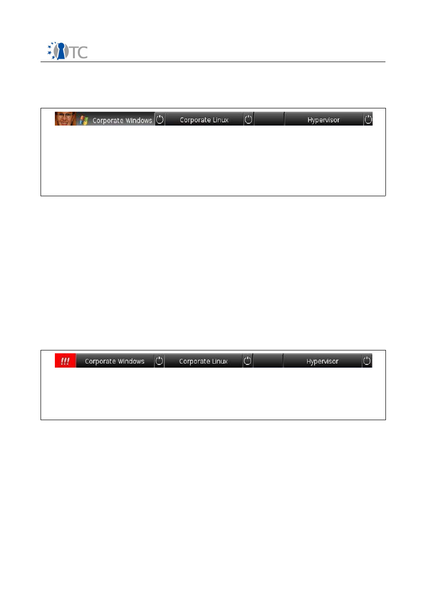

D02.4 Final Report
The Evolution of the OpenTC Architecture
illustrated via its Proof-of-Concept Prototypes
Project number
IST-027635
Project acronym
Open_TC
Project title
Open Trusted Computing
Deliverable type
Report
Deliverable reference number
IST-027635/D02.4/FINAL 1.0
Deliverable title
D02.4 Final Report
The Evolution of the OpenTC Architecture
illustrated via its Proof-of-Concept Prototypes
WP contributing to the deliverable
WP 02
Due date
Apr 2009 - M42
Actual submission date
June 03, 2009
Responsible Organisation
ITAS
Authors
Dirk Kuhlmann (HPLB), Arnd Weber (ITAS),
with additional input from Konrad Eriksson
(IBM), Thomas Fischer (RUB), Stephane Lo
Presti (RHUL), Gianluca Ramunno (POL),
Steffen Schulz (RUB), Dirk Weber (ITAS),
Wolfgang Weidner (HPLB)
Abstract
This report provides an overview of the
OpenTC architecture and the evolution of its
platform and infrastructure with references
to the three major proof-of-concept
prototypes developed by the project.
Keywords
Dissemination level
Public
Revision
FINAL 1.0
Instrument
IP
Start date of the
project
1
st
November 2005
Thematic Priority
IST
Duration
42 months

D02.4 Final Report – Evolution of OpenTC Architecture
FINAL 1.0
Table of Contents
1 Introduction...............................................................................................................4
2 First Period (M01-M12)...............................................................................................6
2.1 Technical Goals......................................................................................................6
2.2 “Private Electronic Transactions” Prototype...........................................................6
2.2.1 General approach..............................................................................................8
2.2.2 Platform Components......................................................................................10
2.2.3 Results.............................................................................................................11
3 Second Period (M13-M24)........................................................................................12
3.1 Technical Goals....................................................................................................12
3.2 “Corporate Computing at Home” (CC@H) Prototype............................................13
3.2.1 General Approach............................................................................................16
3.2.2 Platform Components......................................................................................19
3.2.3 Results.............................................................................................................22
4 Third Period (M25-M42)............................................................................................23
4.1 Technical Goals....................................................................................................24
4.2 Trusted Virtual Datacenter Prototype...................................................................25
4.2.1 General Approach............................................................................................26
4.2.2 Platform Components......................................................................................30
4.2.3 Results.............................................................................................................36
5 Achievements..........................................................................................................38
5.1 Technical Achievements.......................................................................................38
5.2 Standardization....................................................................................................40
5.3 Exploitation..........................................................................................................41
5.4 Outlook.................................................................................................................42
6 References ..............................................................................................................43
Open_TC Deliverable 02.4
2/43

D02.4 Final Report – Evolution of OpenTC Architecture
FINAL 1.0
List of figures
Figure 1: Private Electronic Transactions PoC – architectural elements.........................7
Figure 2: Corporate Computing at Home conceptual overview....................................15
Figure 3: OpenTC Taskbar (cropped)............................................................................17
Figure 4: OpenTC Taskbar (cropped)............................................................................17
Figure 5: CC@H platform with status bar, compartment is running Windows XP........18
Figure 6: CC@H platform with status bar, compartment is running Linux...................18
Figure 7: CC@H PoC– Architectural Elements...............................................................19
Figure 8: Logical view of a simple VDC hosting two TVDs............................................27
Figure 9: Core Components of Datacenter Node .........................................................28
Figure 10: VDC Infrastructure Components..................................................................28
Figure 11: Architecture of VDC / TVD management console........................................29
Figure 12: Virtual Datacenter PoC Setup......................................................................30
Figure 13: libvirt Filtering.............................................................................................33
Figure 14: libvirt Access Control...................................................................................33
Figure 15: Example: Configuration/Policy for L4/Fiasco hosted VM..............................34
Figure 16: Virtual Gallium Driver..................................................................................34
Figure 17: Gallium driver pipe: Non-Virtual compared to Virtual SUI............................35
Open_TC Deliverable 02.4
3/43
D02.4 Final Report – Evolution of OpenTC Architecture
FINAL 1.0
1
Introduction
OpenTC has produced a succession of proof-of-concept prototypes (PoCs) as part of its
technical work. Originally introduced in order to align all project partners towards a
tangible goal and common direction, these PoCs quickly turned into vehicles for
testing technical alternatives, validating theoretical concepts, guiding the direction of
packaging and distribution, and showcasing the state of our work at reviews.
The production of PoC prototypes was not envisaged in OpenTC's initial work plan.
Consequently, no deliverables had been defined for covering the related activities. We
therefore took the decision to add a deliverable to WP02 that would be mainly
dedicated to PoC specific parts of our work work, which is the D02.4 document you are
currently reading. We do not just describe the proof-of-concept prototypes, but use
them as reference points to summarize the evolution of the OpenTC architecture with
regard to components and capabilities. This document also allows us to elaborate on
some investigations that were carried out during the final six months of the project
and for which no written deliverable was foreseen in the original work plan.
This document should not be confused with the final report for the last period and the
for whole duration of the project, respectively. These reports were produced by the
management workpackage WP01 and include a detailed overview of activities and
achievements in all work packages. In contrast, this report focuses on the Proof-of-
Concept prototypes, using them as reference points to describe the progress towards
a generic architecture for trusted platforms and infrastructure. Other essential areas
of OpenTC's work supporting specific aspects (e.g., validation, concrete applications,
mobile and embedded platforms and process organization) are therefore only
mentioned in passing. It should be understood that this takes nothing away from their
vital importance for the project's progress and success.
More information about the prototypes is available at
http://www.opentc.net/
,
including URLs for downloading the code. As an introduction to the project goals and
achievements, the reader is invited to read the project's “OpenTC Final Report”
compiled by WP01 [1]. Additional information on the three annual proof-of-concept
prototypes [2,3,4], as well as on the other prototypes, is available in the project
Deliverables.
OpenTC’s progress during 3½ years of research and development can best be
appreciated by recalling its starting point. The project was conceptualized in 2004 in
the midst of a controversial debate about Trusted Computing. Potential implications of
this technology had initiated an intense public discussion that included official
hearings at national and EU level. Critical voices dominated, and only a very small
number of academic research institutes where prepared to get involved in a
constructive scientific investigation of this area.
Regarding the use of virtualization for improving the security properties of computer
platforms, some preceding scientific research on this topic was available, as the basic
approach had been pursued more than a decade ago. However, Open Source based
hypervisors available to us in 2004 had been built without security as a main focus.
Apart from empirical evidence (“it works practically, so the mechanisms can not be
completely flawed”), there was little information available on the actual the strength
of the isolation mechanism and the quality of their code base. Few thoughts had been
spent on methodologies, techniques, and processes that are suitable to evaluate large
amounts of operating system code developed under the Open Source paradigm.
Open_TC Deliverable 02.4
4/43

D02.4 Final Report – Evolution of OpenTC Architecture
FINAL 1.0
First versions of TPM equipped business computers had only just become available.
The trusted computing hardware, however, was only included on explicit customer
demand, and there existed little, if any, technical support and expertise. There was
only limited firmware support for trusted boot which did not matter much because
there was no trusted boot loader either. Only rudimentary driver support was available
for Linux, however, without tools to interface the Trusted Computing Module. Trusted
Computing application programmer interfaces for Linux were in their infancy.
The project's goal was to research and implement components for an Open Trusted
Computing framework that should be based on technology defined by the Trusted
Computing Group (TCG) and operating system virtualization techniques. Its general
aim was to combine low-level mechanisms for isolation of data and execution
environments, configuration measurement and attestation to enhance the trust and
security properties of standard operating systems, middleware and applications. The
general architecture and, if possible, individual components of the framework should
be applicable to a variety of platform types. Supporting Linux in particular, practical
work addressed the areas of security enhanced OS architectures, of related protocols
and software and of applications using TC technology.
Open_TC Deliverable 02.4
5/43

D02.4 Final Report – Evolution of OpenTC Architecture
FINAL 1.0
2
First Period (M01-M12)
2.1 Technical Goals
In its first year, the project primarily worked on filling a number of technical gaps to
enable integrity measurement and attestation on single platforms. The main purpose
of the proof-of-prototype was to determine how far we could push an architecture that
was primarily based on existing Open Source based components. We focused on
employing minimalist Linux distributions as runtime environment in order to
determine options for reducing the Trusted Computing Base and the runtime
environment for compartments supporting narrow and well-defined purposes.
From a platform perspective, these goals translated into developing a trusted boot
chain measuring the BIOS boot block, the hypervisor layer, the management
compartment, and a purpose-built runtime environment for confidential, security
critical applications. In order to interface the Trusted Computing hardware, drivers and
a library with a subset of TSS API functions had to be provided. This core needed
further extensions with mechanisms for remote attestation, which, in turn, required
basic infrastructure support for generating certificates (necessary for validating the
integrity metrics between remote machines reported by the platforms). This PKI
service had to be complemented with yet another backend service for registering and
maintaining sets of 'know-good' integrity metrics on the server side.
Additional topics were addressed in parallel to working on the PoC but not embedded
in it. Amongst others, this concerned
●
foundations for disaggregating the Trusted Computing Base on Xen (Mini-OS,
inter-domain communication primitives),
●
the development of the Trusted Software Stack and corresponding Java
interfaces,
●
conceptual work on the platform architecture,
●
a first round of investigations of requirements for embedded and mobile
platforms,
●
the definition of the test plan and selection of validation tools, and
●
a first use-case prototype for multifactor authentication.
This list of activities is necessarily very condensed and far from comprehensive. For
more detailed information, the reader should consult the activity report for the first
working period of OpenTC [2].
2.2 “Private Electronic Transactions” Prototype
Work on this PoC involved developers from HP (United Kingdom), IBM (Switzerland),
Politecnico di Torino (Italy), Ruhr-Universitaet Bochum (Germany), Technische
Universitaet Dresden (Germany), IAIK Graz University of Technology (Austria) and
SuSE (Germany). The prototype aims to demonstrate some core ideas of the OpenTC
approach, combining Trusted Computing (TC) and virtualization technologies with Free
and Open Source Software (FOSS) development. The release implements a concrete
application of TC, is available to the general public, and can serve as a working basis
for interested developers.
Open_TC Deliverable 02.4
6/43
D02.4 Final Report – Evolution of OpenTC Architecture
FINAL 1.0
The prototype was designated as a first, intermediate step towards a trusted platform
architecture, provided as a proof-of-concept that gave some first impression of how TC
and virtualization could be applied in practice, geared at fostering discussions about
the use of TC and the OpenTC architecture, and at encouraging contributions from the
FOSS communities. With some minor exceptions, all source code was released under
the GPLv2 license. It was provided as both a Live CD image (binaries) and as source
code. The prototype was developed and tested on HP nx6325 and IBM T60 laptops
equipped with Trusted Platform Modules (TPMs) v1.2 and 1 GB RAM. The result still
lacked several components necessary for the OpenTC framework, and the existing
components were not in their final shape. Therefore, only limited resources were
invested to thoroughly test this release.
The architecture employs virtualization layers - also called Virtual Machine Monitors
(VMMs) or hypervisors - and supports two different implementations (i.e., Xen and
L4/Fiasco). This layer hosts compartments, also called virtual machines (VMs),
domains or tasks, depending on the VMM being used. Some domains host trust
services that are available to authorised user compartments. Various system
components make use of TPM capabilities, for instance, to measure other components
they depend on or to prove the system integrity to remote challengers.
The prototype implements a scenario named Private Electronic Transactions (PET),
which aims to improve the trustworthiness of interactions with remote servers.
Transactions are simply performed by accessing a web server through a standard web
browser running in a dedicated trusted compartment named "domT". In the PET
scenario, the server is assumed to host web pages belonging to a bank; however, the
setup also applies to other e-commerce services.
The communication setup between browser compartment and server was extended by
a protocol for mutual remote attestation tunnelled through an SSL/TLS channel. During
the attestation phase, each side assesses the trustworthiness of the other. If this
assessment is negative on either side, the SSL/TLS tunnel is closed, preventing further
Open_TC Deliverable 02.4
7/43
Figure 1: Private Electronic Transactions PoC – architectural elements

D02.4 Final Report – Evolution of OpenTC Architecture
FINAL 1.0
end-to-end communication. If the assessment is positive, end-to-end communication
between browser and server is enabled via standard HTTPS tunnelled over SSL/TLS.
2.2.1 General approach
The approach of this scenario relies on four elements:
1. Trusted platform setup
2. Authenticated boot process
3. Registration of the known-good measurement values
4. Trusted communication setup
The following sections give a cursory overview of these steps.
1. Trusted Platform Setup
As a first step, the user has to initialise the client platform and to prepare it for
subsequent operations.
The setup procedure is performed as soon as the OpenTC system has started up for
the first time. First, the user, acting as the platform owner, must "take ownership" of
the TPM. This assumes that the TPM is enabled in the BIOS and, if it was already used
before, is cleared and re-enabled.
Next, an Attestation Identity Key (AIK) must be created and certified, and the
corresponding identity activated. In a real-world situation, Privacy Certification
Authorities (PCAs) that operate a valid TC-enabled Public Key Infrastructure (PKI)
would be used during this process. However, for the sake of simplicity, both the
requests for and the release of the AIK certificate operations are handled locally on
the client, using hard-coded passwords. This is done by a software library that comes
with hard-wired mock certificates for the authorities involved (e.g., PCA).
2. Authenticated boot process
From the initial bootup process up to the start of trusted components, a chain of trust
is generated: each component of the chain is measured prior to passing control to it.
The component measurements, i.e. their fingerprints through cryptographic hashes of
relevant binary and configuration data, are accumulated in Platform Configuration
Registers (PCRs) of the TPM.
In order to generate the chain of trust, all components in this chain must be
instrumented to perform integrity measurements of their successors in execution. For
instance, the BIOS must include a Core Root of Trust for Measurement (CRTM), as
defined by the Trusted Computing Group. Further modifications concern the Master
Boot Record (MBR) and the boot loader. The latter has to measure the hypervisor, the
kernel and initial ram disk images of privileged domains, or files or disk images of
trusted compartments. For this purpose, the OpenTC prototype includes "tGRUB", an
extended version of the familiar GRand Unified Bootloader (GRUB). The tGRUB boot
menu offers a choice between the two different virtualization layers, XEN and
L4/Fiasco.
A second boot menu option concerns the execution mode. It offers a "normal user"
mode that comes with a simplified interface and restricts access to management
functions, geared towards showing how the user can perform a transaction in a real-
life scenario. The "expert user" mode, on the other hand, enables full access to
Open_TC Deliverable 02.4
8/43

D02.4 Final Report – Evolution of OpenTC Architecture
FINAL 1.0
management features, permitting a peek “under the hood”. It allows interactive
access and comes with a more complex interface. As a demonstration of the
differences between successful and failing verification of integrity measurements, the
boot menu also provides a "good domT" and a "rogue domT" option. In the "good"
mode, all measurements match their expected values. On the other hand, the "rogue"
mode simulates a modified compartment that could have been tampered with by an
attack from a malicious program. In this case, at least one PCR contains an
unexpected measurement value.
OpenTC’s tGRUB loader is constrained to supporting the so-called Static Core Root of
Trust for Measurement (S-CRTM) model. In this case, all security and trust-relevant
components must be measured, starting with the BIOS. To demonstrate the new
Dynamic Core Root of Trust for Measurement (D-CRTM) approach introduced with TPM
v1.2, OpenTC provides the Open Secure LOader (OSLO) boot loader implemented as a
standard module for GRUB/tGRUB. OSLO implements the D-CRTM for AMD's CPUs,
invoking the SKINIT instruction for re-initialising the platform in a trustworthy manner
late at runtime.
3. Registration of the Known-Good Measurement Values
The client can now register with a server by uploading the measurements that
represent its platform state (that is assumed to be trusted). During this procedure, the
user (acting as a bank operator) registers his platform with a bank server. To this end,
he uploads the integrity measurements of his platform (i.e., the expected value for the
domT compartment), thus authorising the trusted compartment to connect to the
bank server. In a realistic scenario, this process would be automated using secure
communications and a dedicated registration protocol. Since the prototype does not
implement this feature, the user instead launches a script (in "normal user" mode) or
uses a browser (in the "expert user" mode) to upload a file containing a measurement
digest to the front-end proxy running on the bank server. This digest corresponds to
the current state of the client platform, i.e., its trusted virtualization layer and the
trusted domain domT. For simplification, the bank server (named "domS")
measurements are already present on the client side (in a privileged compartment of
the virtualization layer named Domain-0 or dom0) of the OpenTC system: the PCR
metrics defined to correspond to a "trusted" server state are hard-wired into the
system.
4. Trusted communication setup
Trust status information is exchanged between the client and the server through a pair
of proxy services running in a privileged compartment (dom0) on the client and as a
front-end in the server compartment (domS). The proxies communicate through an
SSL/TLS tunnel that can encapsulate any TCP-based protocol. For the PET scenario,
HTTPS is used.
The communication setup is initiated when the browser is started in the trusted
compartment (domT) and the link provided in its toolbar clicked on. The connection
request is passed to the client proxy that runs in the privileged compartment (dom0).
A dedicated component running in this compartment opens an SSL/TLS tunnel to
connect to the server-side proxy running in the bank server compartment (domS). The
permissibility of this connection must be stated in the policy of the virtualization layer.
Measurements of software components on both sides (client and server, see above)
are represented by PCR values of the hardware and software TPM. These values are
signed with the AIK acquired in step 3, and communicated to the respective peer
Open_TC Deliverable 02.4
9/43

D02.4 Final Report – Evolution of OpenTC Architecture
FINAL 1.0
system.
Communication between the client and the server will only be enabled if both the
client and the server metrics suggest that they booted into (and still run) the expected
configuration. This could prove a countermeasure to phishing attacks, preventing the
user from following a false-lead URL to connect to a fake bank server. The mechanism
might also improve the protection of the bank server against unauthorised
connections.
2.2.2 Platform Components
The authenticated boot process launches the selected virtualization layer, which is
responsible for controlling four dedicated compartments, namely:
●
A privileged compartment (called "dom0") that directly accesses the physical
platform and includes the drivers for hardware devices. This compartment is
also used to perform management operations at the virtualization layer. In
"normal user" mode, this compartment is not visible, whereas the "expert user"
mode allows client compartments (see below) to be started manually via
scripts. Dom0 is part of the Trusted Computing Base (TCB).
●
A compartment for the server side of the demonstrator (called "domS") which
executes the banking application and its front-end. It locally simulates a remote
server (web server and proxy). For the prototype, this removes the dependency
on external communication which would require an additional, separate banking
computer. The domain is accessed via the network name "domSbox", and a
software TPM emulator is used to perform the integrity-related operations for
this domain. The compartment is not visible to the user. Conceptually speaking,
this domain could as well be executed on a remote physical machine.
●
Two compartments for the client side of the system. The first compartment
(called "domT") solely provides web browsing as its single functionality. It is
considered trusted in that its integrity has been measured and the values
correspond to a well-known configuration. Measurements, which include the
configuration file, the kernel and the virtual disk image with the root file system,
are accumulated within PCR[11] in the TPM through the “PCR extend”
operation. The second compartment is an untrusted one (called "domU"). It is
not measured and is intended for daily use, but specifically not for the PET
transaction.
The platform policy ensures that only the trusted compartment (domT) is authorised to
use the client proxy (executing in the privileged compartment dom0) for connecting to
the bank server (executing in domS). By contrast, the untrusted compartment (domU)
cannot connect to the bank server, since no measurements exist that can be used to
attest to its trusted state.
Client compartments run a stripped-down Linux system (a Debian-based Damn Small
Linux/DSL distribution), while the privileged compartment dom0 runs either a SuSE or
a DSL distribution, depending on which version of prototype is used. The server
compartment (domS) runs a standard Debian distribution.
The L4-based OpenTC implementation provides a GUI service for managing input and
output. This GUI is provided as a trusted service started by tGRUB at boot time and
running in a dedicated compartment. The top part of the display is reserved to
indicate the number of active compartments and the name of the one currently
Open_TC Deliverable 02.4
10/43

D02.4 Final Report – Evolution of OpenTC Architecture
FINAL 1.0
hooked to the display. This section of the screen is considered trusted because it is
under the exclusive control of the GUI. With the L4 virtualization layer, a pair of
hotkeys are used to switch between compartments.
For the Xen-based OpenTC implementation, the whole screen is under the control of a
selected compartment. Each compartment is assigned a fixed hotkey. When a specific
hot key associated to a compartment is pressed, the user can be sure that the desired
compartment will actually be displayed since the key is under the exclusive control of
the privileged compartment dom0.
2.2.3 Results
Although the implementation of the PET scenario was relatively straightforward and
cuts a number of corners, it was a first, concrete example of coupling TC with
virtualization technology. As the source code of the prototype is publicly available, the
OpenTC prototype could provide a working basis for any developer interested in
implementing TC applications.
Trusted Computing was (and arguably still is) an emerging technology. External
infrastructure support, e.g., for issuing certificates, did not exist in 2006, a situation
that has not improved much since then. The technology is also fairly complex. For
example, first-time users are easily confused by the multiplicity of authorisation
secrets. For the sake of simplicity, this OpenTC prototype therefore uses fixed
passwords as authorisation secrets for the TPM and AIK keys (which can, of course, be
changed for all operations by editing the configuration scripts in the "expert user"
mode).
The prototype attempted to strike a balance here, providing all necessary components
(including PKI mechanisms) as part of the distribution. In particular, the server-side
mechanisms reside in a dedicated compartment on the same physical hardware that
runs the client. The PCR metrics corresponding to a trusted PKI server state were hard-
wired into the PKI component running on the client system. The banking server
compartment domS is not actually measured. It employs a TPM emulator instead of a
hardware TPM, and we communicate the initial PCR values of the software TPM. This
is a concession we had to make in order to include the server side of the prototype in
the same distribution. In real-world scenarios, the server side would run on a different
physical platform, and integrity measurements of the server domain would be duly
recorded in its own hardware TPM.
In the "rogue domT" scenario, the measurement of the client banking compartment
(domT) does not correspond to the one uploaded earlier to the bank server.
Consequently, the attestation will fail, and communication with the bank server will be
disallowed. Due to implementation specifics, the PCRs mismatch had to be simulated
in that the values are not generated from actual measurements of the persistent
compartment image but only from a different configuration file for domT. Furthermore,
the prototype is limited in that man-in-the-middle or "relay of attestation challenge"
attacks can not be thwarted. For more information, please see [2].
Open_TC Deliverable 02.4
11/43

D02.4 Final Report – Evolution of OpenTC Architecture
FINAL 1.0
3
Second Period (M13-M24)
OpenTC's first prototype focussed on the protection of private information, securing
interaction with security-critical web-based services such as home banking. Its main
purpose was to produce a tangible platform that included several important core
concepts and building blocks for trusted virtualization: measuring integrity during
boot-up, separating execution domains for security critical and normal web-browsing,
and a proof-of-concept set-up for remote attestation. This platform was supported by
elementary PKI infrastructure and a first proof-of-concept for multifactor
authentication.
During this first round of prototyping, a number shortcuts had to be taken, and the
result was rough around some edges. Our aim for the second period was to to improve
the existing elements and to extend the architecture with features that would bring us
closer to a client platform that was universally usable.
3.1 Technical Goals
One area of improvement was the intercommunication between components of the
trusted computing base, in particular regarding the graphics device. None of the two
hypervisors used by OpenTC was particularly geared towards workstations. L4/Fiasco
had been developed for embedded devices as main target platforms and evolved
towards PC platforms. Xen's original strength was the virtualization of server
instances, without too much regard to workstations. As a consequence, network and
storage virtualization were well supported, while similar support for graphics (and
audio) was missing. In the first prototype, the screen content associated to different
compartment was essentially communicated to the platform's graphics controller
using the network stack.
Our first aim was therefore to Improve the inter-task communication between
compartments by developing inter-process communication (IPC) mechanisms that
could replace the previous, network centric approach. The resulting technical activity
targeted a fast, shared-memory based mechanism that allowed to communicate data
between arbitrary hosted VMs. This mechanism can be used not only by full OS
instances hosted by the hypervisor, but also, and in particular, by small, generic tasks
that run directly on the hypervisor layer without requiring a fully fledged operating
system as execution environments.
The development of a fast communication mechanism was a precondition to address
another aim of OpenTC: to provide support for disaggregating the Trusted Computing
Base. This objective required multiple strands of work. First, an environment had to be
provided for encapsulating services in mini-operating systems that can be executed as
generic hypervisor tasks. On the one hand, this would allow us to isolate highly
privileged operations – such as full access to the physical memory of the platform –
from the operating system running in the management domain. Second, it permitted
to locate untrusted device drivers in dedicated domains, thereby isolating them from
the management OS.
Regarding the potential practical relevance of the OpenTC framework, the lack of
support for legacy and proprietary operating systems in the first PoC had been flagged
as a serious issue. Although this was not on the original agenda of OpenTC, we
realized that we had to address this topic during this phase.
Open_TC Deliverable 02.4
12/43
D02.4 Final Report – Evolution of OpenTC Architecture
FINAL 1.0
Experiences with the first prototype also highlighted shortcomings of the integrity
measurement. Its granularity was very coarse and only permitted to check complete
disk partitions. Also, we required a mechanism to separate the static from the dynamic
elements of a file system, allowing us to distinguish the elements to be files whose
integrity had to be measured from those whose integrity had to be protected by other
means.
To improve the interfaces to the Trusted Computing layer was another topic on the
technical agenda. Lacking appropriate technical support, the first PoC had employed
the hardware mechanisms on an ad-hoc basis, sometimes by direct access through
the low-level device. These workarounds had to be replaced with access through the
TCG-defined, high level APIs provided by the TSS stack. This had to be coordinated
with OpenTC's continued investigation on unified access to the hypervisor layer and
the extension of their APIs to support security and trust related functionality. This line
of work was also pursued to gain insights and first practical experience on distributed
management aspects for trusted virtual platforms.
Technical work was also guided by the requirement to produce a platform that was
suitable for the application development in work package 06 and could be used as
hand-on training system for practical labs.
A much abbreviated list of major topics addressed in parallel includes:
●
Development of methodologies for verification and validation (V&V) , extensive
V&V and testing of OpenTC components
●
Completion of Java wrappers for C-implemented Trusted Software Stacks, start
of fully Java-based implementation of TSS
●
Improvement of PKI components and protocols
●
Development of software components for virtual networks, prototyping for TPM
virtualization and hierarchical integrity management
●
Porting of microkernel components to mobile and embedded development
platform
●
Packaging and distribution of first year PET prototype
●
Migration from DSL-Linux to OpenSuSE 10.3 and OpenSuSE build system
This list is far from comprehensive. For more detailed information, the reader should
consult the activity report for the second working period of OpenTC [3].
3.2 “Corporate Computing at Home” (
CC@H
) Prototype
The description of the “
CC@h
” proof-of-concept demonstrator prototype has been split
into two sections. First the scenario and user interface is described, second the
implementation is presented in some detail.
The scenario and use cases for
Corporate Computing at Home
emerged from
discussions with our industrial partners who highlighted the following requirements for
a new, appealing business application [6]:
●
A corporation wishes to secure its standard execution environment, consisting
of operating systems, applications and data. It wants to safeguard these
corporate resources against accidental modifications or reconfigurations by
their employees that would reduce the protection level (e.g., through surfing
Open_TC Deliverable 02.4
13/43

D02.4 Final Report – Evolution of OpenTC Architecture
FINAL 1.0
privately on insecure Websites or running insecure code, either accidentally or
for testing purposes).
●
Employees need to run corporate applications at home or while travelling.
However, they would also like to run their own applications such as games, and
they may wish to handle their private data (emails, movies etc). The corporation
might endorse such ‘reasonable private use’ of their equipment, provided that
the corporate execution environment is kept safe. Also, employees might use
their privately owned PCs for performing corporate tasks, e.g., by carrying an
entire corporate compartment on a USB stick that can be migrated between a
corporate machine and a private one.
The use case could also have been termed “Private Computing on Corporate
Platforms”, and in this regard, it builds on the theme that guided the OpenTC's first
work phase. It reflects the situation where employers tolerate, within reasonable
limits, the utilization of corporate equipment (in particular notebooks) for private
purposes [7].
This liberal attitude is more common than one might think: as private life and work are
ever harder to separate, it has not gone unnoticed that employees tend to be more
productive if allowed to quickly resolve private matters even when at work. With the
proliferation of notebooks, the strategy of keeping a tight grip on the configuration is
constantly waning, while working equipment is increasingly hauled back and forth
between home and work.
While conniving in the private use of their equipment, employers still want a safeguard
that their machinery remains fit for being used on their corporate network. With
regard to malware and other types of subversion, they should not be more exposed
than they were before. Corporate policies may call upon the good judgement of their
employees to ensure this, e.g., by allowing access to email and documents as long as
vetted applications are used, while disallowing the installation and operation of
arbitrary additional software, even for test purposes. Quite frequently, however, this is
exactly what the user wants or needs to do.
The use case assumes that the interests of the corporation and the user are not in
conflict regarding the separation of corporate and private concerns. Quite on the
contrary, we may suppose a cooperative attitude on both sides. A user empowered to
use corporate equipment for his own purposes would share the genuine interest of
keeping the corporate infrastructure safe and sane. The corporation, on the other
hand, would endorse the user's attempt to create a software environment tailored to
his own needs. However, the current end system architecture of “one active execution
environment at a time” is not trusted to assure that the corporate infrastructure will
go unharmed when the user installs arbitrary software, and it makes it hard to
reconcile the needs of both parties.
Typical work-arounds are, for example, dual-boot configurations for separating
corporate and private partitions, or the creation of multiple user accounts and/or root
file systems on the same operating system (OS). They come with different
inconveniences: long reboot delays when switching execution contexts, as well as an
incomplete separation due to resource sharing or built-in relations of dominance and
subordination between different partitions.
A desirable architecture would allow simple and fast switching between two or more
different roles (such as private and corporate), mapping them to execution
environments that, while running in parallel, are protected against uncontrolled
Open_TC Deliverable 02.4
14/43

D02.4 Final Report – Evolution of OpenTC Architecture
FINAL 1.0
mutual interference or inference. It should support multiple OS types, require minimal
modifications to existing code bases, clearly indicate the role and execution
environment the user is working in at any given time, and allow for policy-controlled
information flow between compartments if necessary. It should offer some grade of
protection against tampering with its disk image even when not active, and it should
provide a means to prove its integrity to the user as well as to remote nodes (such as
the corporate VPN gateway). In a nutshell, this is the list of requirements that guided
OpenTC's work on the new proof-of-concept prototype.
The Trusted Computing approach faces a general, well-known challenge with regard to
maintaining databases with “known good integrity values”. Knowledge of these values
allows a relying party to check whether a computer requesting access is compliant
with specific requirements or not. An initial simplification of our scenario assumes that
the employer provides its employees with PCs and maintains a database with “good
values” for corporate equipment.
Provided that the employer configures the machine, he can also seal the corporate
execution context cryptographically against a specific configuration of the OpenTC
layer, making it accessible under this configuration only. This is a viable mechanism to
avoid remote attestation, allowing using TC even in the absence of global databases
with ‘known good values’ and platform certificates. Still, migration is possible:
corporations might share their definition of known-good configurations with their
business partners, thus creating a business case for creating and maintaining a
common database or for platform certificates.
Open_TC Deliverable 02.4
15/43
Figure 2: Corporate Computing at Home conceptual overview.
•
“Corporate” designates a compartment used by the employee for corporate purposes, e.g., with a
corporate standard configuration of a mainstream operating system (OS).
•
“Security” compartments may contain scanners, firewalls, or auditing instrumentation.
•
“Private” denotes a compartment used for the employee’s private purposes.
•
“Other” compartments may contain a variety of OS and applications
.

D02.4 Final Report – Evolution of OpenTC Architecture
FINAL 1.0
3.2.1 General Approach
Figure 2 shows an overview of the OpenTC architecture applied to the
Corporate
Computing at Home
scenario. The OpenTC layer between the hardware and the
compartments provides security services and isolation. A corporation can shield its
compartment from other execution environments on the same computer. The user has
an operating system (OS) provided and configured by his corporation running in
parallel to one used for his personal tasks. The corporation can rely on the fact that its
configuration runs in a well-known and attested operating environment, and it can get
assurance that its OS can be only used in accordance with the corporate policies. In
parallel, the user can run one or more compartments of his own. More compartments
may exist, e.g. for:
●
platform-wide security applications,
●
games,
●
security applications and services, e.g. for digital signatures or for the
PET,
●
browsers used for “surfing” potentially dangerous websites (such a
compartment may simply be deleted entirely after use, and re-instantiated
again),
●
software of unknown trust properties, for use or testing, in a private or business
context (such software can be executed in a dedicated compartment that works
as a sandbox that might be erased after use).
For convenience, the default configuration assumes that compartments are isolated.
The administrator may, however, configure paths for data exchange between
compartments, e.g., for allowing security applications to inspect other compartments.
The handling of such a system is not straightforward for someone without specialist
knowledge, be it an administrator or an end user. The additional functionalities
increase the complexity of the system, and managing these functionalities raises
questions of usability. The complexity of a computing system using TC in combination
with a hypervisor and running several, possibly different OS, may prove to be an
entrance barrier – if the learning curve is considered too steep or the cost-benefit
relation too low, corporations may be reluctant to employ this technology. So, how can
such a system be designed to be more easily manageable?
Regarding the acceptance and manageability of such a system, the Institute for
Technology Assessment and Systems Analysis (ITAS) has specified a set of
requirements. Although some of them may sound trivial, they were elicited on a
related requirement analysis. This process consisted of a media review and a small
expert survey. Regarding the expert survey, eight experts – administrators and
security specialists from various German corporations – were interviewed. The
respondents were asked to read an introductory conceptual paper on the OpenTC
architecture, and to comment on it in subsequent interviews. The following
conclusions were derived:
1. The user interface should provide means to create a new compartment and
delete an existing one.
2. The user interface should be graphic, for managing compartments easily, as
opposed to relying on old or new hotkeys.
3. Information on the Trusted Computing Base (TCB) should be provided on the
main screen, and should be easily manageable, such as by pressing buttons
with a mouse-click.
Open_TC Deliverable 02.4
16/43

D02.4 Final Report – Evolution of OpenTC Architecture
FINAL 1.0
4. If information on the status of a certain compartment or other component is to
be provided to the user, this should be done using easy-to-grasp graphic
artefacts.
The design required to select features that can be omitted from the graphical user
interface (GUI) as opposed to those that should be shown in a size-restricted section of
the display. This raises a number of issues; only two of which will be mentioned here.
The first concerns protection against mimicry: we have witnessed the emergence of
attacks where the GUI is used to fool users into believing that a given graphic element
is trustworthy, while it is in fact concealing an exploit. The second issue concerns the
protection of users against their own mistakes, as they might lose sight of their
compartments. ITAS specified a taskbar for easily managing the TC hypervisor,
including a user-specified image that is provided during installation. If the TCB is in a
known state, the image will be unsealed and displayed. If the TCB is in a different
state, the image can not be decrypted and will therefore not be displayed. This
indicates that the TCB-components (including the GUI) might have been tampered
with. A first version of this taskbar has been implemented in the
Corporate Computing
at Home
proof-of-concept prototype.
Fig. 4 shows an example of a failed unsealing procedure. The code or the configuration
of the TCB is no longer in a known state; nothing that is displayed can be trusted.
Figs. 5 and 6 show the task bar in the context of different operating systems. We
expect that this user interface will help to make the OpenTC architecture easy to use
by administrators and users.
Open_TC Deliverable 02.4
17/43
A sealed image (personalised with a facial image chosen by the user) and an activated button
(indicating the compartment currently being displayed on the remainder of the screen). The
taskbar provides graphic access to several compartments and to the TCB (hypervisor) control
panel. Due to the sealing process, the image can only be displayed if the platform TCB has
booted into a well known, expected state .
Figure 3: OpenTC Taskbar (cropped)
The red image at the left indicates that image chosen by the user can not be
displayed: the TCB is not in a known state and that unsealing the image has not been
possible.
Figure 4: OpenTC Taskbar (cropped)

D02.4 Final Report – Evolution of OpenTC Architecture
FINAL 1.0
Open_TC Deliverable 02.4
18/43
Figure 5: CC@H platform with status bar, compartment is running Windows XP.
Figure 6: CC@H platform with status bar, compartment is running Linux.
D02.4 Final Report – Evolution of OpenTC Architecture
FINAL 1.0
3.2.2 Platform Components
The
CC@H
architecture comprises the following main functional components:
●
boot-loaders capable of producing cryptographic digests for lists of partitions
and arbitrary files that are logged into PCRs of the Trusted Platform Module
prior to passing on control of the execution flow to the virtual machine monitor
(VMM) or kernel it has loaded into memory,
●
virtualization layers with virtual machine loaders that calculate and log
cryptographic digests for virtual machines prior to launching them,
●
a graphical user interface enabling the user to launch, stop and switch between
different compartments with a simple mouse click,
●
a virtual network device for forwarding network packets from and to virtual
machine domains,
●
basic support for binding the release of keys for encrypted files and partitions to
defined platform integrity metrics,
●
a dedicated virtual machine to demonstrate the graphics throughput using the
example of medium-resolution video.
Compared to the previous one, this PoC includes a number of additional security
services, is capable of hosting proprietary operating systems, and provides the basis
for separating security critical functionality from general application logic (in this case,
a DRM core from a rendering engine). We will walk through the components one by
one; some additional characteristics will be mentioned in this discussion.
Integrity checking during VMM boot-up
The current setup assumes the availability of an Infineon TPM v1.2 and BIOS support
for writing PCR values into the Trusted Platform Module (tweaks for TPMs from Atmel
Open_TC Deliverable 02.4
19/43
Figure 7: CC@H PoC– Architectural Elements

D02.4 Final Report – Evolution of OpenTC Architecture
FINAL 1.0
or National Semiconductor should be relatively straightforward).
To explore the “dynamic root of trust” option introduced by the TPM 1.2 specification,
the current (Feb 2008) requirement is an AMD machine Our setup was tested on HP
nx6175b, nx6325 and 6715b notebooks with AMD Turion CPUs.
VMM integrity measurement during boot-up was already possible in the previous
release, but the functionality was quite constrained: the file systems for the VMM and
the hosted VMs were static ISO images that would be measured prior to being
instantiated as copy-on-write RAM disks. Any modifications to the RAM copies were
lost when the machine was switched off.
For the first prototype, this shortcut was acceptable for the purposes of demonstrating
the technical principle of software integrity measurement during boot time. For
practical use, however, it is clearly inadequate. OS file systems comprise both static
and dynamic elements, a fact which has to be accommodated by separating them,
measuring the static parts during start-up, and leaving integrity verification of
(security-critical) dynamic data to non-mutable mechanisms embedded in and
measured with the static part.
Conceptually, this problem is addressed by storing static (read-only) data needed at
boot time and dynamic (read-write) data in different partitions. During the boot
process, the two partitions are mapped onto each other by means of an
overlay file
system
. The resulting view should be that of an ordinary, single partition. Please note
that we only provide a very rough first approximation of this concept in the current
prototype: during the first instantiation of the file system,
all
files reside in the read-
only part and are included in the measurement. However, each time a file is modified
by the OS, it is copied to the read/write part. From then onward, the overlay file
system always returns the ‘dynamic’ copy of the file (residing in the overlay’s
read/write part) to the OS. As a consequence, the current mechanism cannot catch
and measure modifications made by the OS during runtime. This will be improved
either by patching the modifications again in a controlled fashion or by properly
splitting the static and the dynamic data and storing them respectively onto the read-
only and read/write parts.
There are two choices for TPM-supported boot. The first one is based on the TPM
v1.1b-defined concept using a static root of trust: starting from the root of trust for
measurement in the BIOS, all software components relevant for the boot procedure
are measured, and the values stored in corresponding TPM registers. As in the
previous release, this is done by a dedicated version of the GRUB boot loader.
Alternatively, the OSLO boot loader, a software module for the standard GRUB, can be
employed to use the TPM v1.2-defined mechanisms with dynamic root of trust (caveat:
an AMD machine is required for this). To show both alternatives, the
CC@H
prototype
uses OSLO as an extension of TrustedGRUB. TrustedGRUB allows arbitrary additional
files to be included in the measurement process during boot-up, which have to be
defined in a separate list. However, the prototype does not make use of this feature.
Virtualization layers and virtual machines
Similar to the last release, there is a choice between two flavours of virtualization: the
microkernel-based L4 and the (currently) monolithic Xen. Both have their pros and
cons.
L4 is a lean, minimalist system and ideal for OpenTC's investigations into hypervisors
of reduced complexity and a minimal trusted computing base in general. However, the
Open_TC Deliverable 02.4
20/43

D02.4 Final Report – Evolution of OpenTC Architecture
FINAL 1.0
current L4 implementation only supports one CPU, so on an SMP or multi-core
platform, the chances are that only a fraction of the CPU power can be used. And while
it has been practically demonstrated that proprietary operating systems such as XP
can
be virtualized on an L4 based hypervisor, L4's extensions employing hardware
virtualization have not yet been made public and can, therefore, not be used by
OpenTC.
The second candidate, Xen, has gained a reputation for stability, SMP support and
capability of hosting MS-Windows in hardware-supported virtualization mode.
However, it is currently intrinsically reliant on Linux as a hosting environment for
drivers and management software. L4, on the other hand,
can
use Linux for this
purpose (as we do), but also provides for more generic, lightweight mechanisms. The
XEN code base is quite large, which makes it more difficult to validate its security and
isolation properties.
For experiments on hosting a proprietary OS alongside with Linux, Xen therefore is the
only option. If the aim is just to run multiple Linux instances in parallel, either L4 or
Xen can be selected. The file system content of L4's and Xen's Linux management
domains are mostly identical, give or take some configuration files and hypervisor-
specific management tools. We therefore use the same disk image for both
hypervisors with dedicated subdirectories for VMM-specific components.
Graphical user interface
Compared with the last proof-of-concept prototype, the user interface was very much
improved. Following the requirements analysis mentioned above , we designed its look
and feel to match the typical user experience with graphic desktops. The OpenTC
framework claims a narrow region at the top of the screen for a proof-of-concept
implementation of a ‘trusted task bar’. This bar allows compartments (dedicated VMs)
to be launched and terminated as well as switching between them. It also has a small
region to display a sealed control image which is only visible if the integrity checks for
the hypervisor and the controller domain(s) were passed successfully. The rest of the
screen is dedicated to displaying the desktop and/or windows of a selected VM. To
support the user's perception of different working contexts, only one of these desktops
is displayed at a time, i.e. we currently do not mix windows from different VMs on a
single desktop. We believe this strict separation to be advantageous in most cases.
User domains now pass graphical output to frame buffers provided by the hypervisors.
Compared with the network-based approach used in the last version, this method is
more efficient. The current version for XEN still relies on an X server in the controller
domain, and VNC is used to receive and forward the data arriving from user domains.
For L4, we implemented a simplified trusted status bar without buttons and sealed
image display that is independent of X as rendering engine.
The prototype comprises a compartment with a viewer for multimedia content. This
was included to get an impression of performance characteristics for demanding
applications.
Virtual network device
OpenTC implements a virtual switch for interfacing the virtual network interfaces of
each domain with the physical network card. A packet filter in the controller domain
can be configured such that certain domains only have access to a defined range of
local or remote IP addresses. To ensure mutual isolation, interactions between
different user compartments on the same platform should be disallowed by default.
Open_TC Deliverable 02.4
21/43

D02.4 Final Report – Evolution of OpenTC Architecture
FINAL 1.0
Platform-integrity linked protection of data
The CC@H OpenTC proof-of-concept prototype includes an example of binding data
assigned to a particular VM to its boot-up state. To this end, we have split the Linux
file system into a static and a dynamic part. The dynamic part is only accessible if the
integrity checking of static part was passed successfully.
The prototypic implementation is purely conceptual and quite rough in more than one
respect. In particular, it is not fit for any serious use, as it is based on setting a value
of a resettable register in the hardware TPM. This PCR has to be cleared after
terminating the compartment. This does not only counter the logic of PCR extensions,
but also constrains the use of this mechanism to one compartment at any given time.
3.2.3 Results
The second PoC marked several major improvements over the first one:
●
it reflects a familiar scenario from the corporate world,
●
it is built on a distribution that can be compiled and packaged from scratch
(OpenSuse 10.3),
●
it allows for a uniform development environment (GNU Compiler Collection gcc/
g++ 4.2) for both hypervisor alternatives (L4 and Xen),
●
it provides a GUI that hides the underlying complexity, signals the platform's
trust state, and allows for intuitively easy switching between different
roles/execution contexts,
●
it can host one or more instances of proprietary guest operating systems
(Windows XP), and
●
it comes closer to isolating security critical functions such as console I/O and
networking.
The components developed allowed to split static and dynamic parts file systems and
to measure elements of the TCB at granularity of single files during the boot process.
Virtual networking with ethernet encapsulation and packet tagging allowed to split
physical networks into multiple logical trust domains. The access to cryptographically
protected data could be based on the measured integrity of the underlying platform,
and dedicated virtual machines could be used to split systems and application into
security critical and uncritical parts interacting through highly efficient inter-process
communication mechanisms. Access to local resources was policed by a platform local
compartment manager, and drivers als well as other components could be moved out
of the management OS into dedicated domains if demanded by security requirements.
The remaining issues concerned the overhead of managing a Corporate Computing at
Home system, additional costs for maintenance, software, user qualification etc. These
costs have to be weighted against the benefits of deploying the architecture. It also
became clear that we had to put additional emphasis on user friendliness and layout
characteristics of the prototype's GUI. It had to be made it as simple as possible while
maintaining the necessary grade of distinctiveness between different compartments
that are mapped to different roles the end user may assume.
Open_TC Deliverable 02.4
22/43

D02.4 Final Report – Evolution of OpenTC Architecture
FINAL 1.0
4
Third Period (M25-M42)
The plan for the this period was the extension of the OpenTC architecture to cover the
use case of a virtual datacenter. The design was based on the concept of “Trusted
Virtual Domains” developed during the previous periods. Such a domain is defined by
a policy specifying the access to and the protection of shared ressources. The
architectural goal is to run virtualized execution environments of different domains
side by side while safeguarding that no information is leaked between them.
Two external factors influenced our work and required adjustments of our planning.
When the project was conceived in 2004, we assumed a rather quick adoption of
Trusted Computing hardware in server architecture. Back then, this expectation
appeared to be justified by the large amount of work that was invested in this area by
TCG members. It practice, it turned out that while trusted computing hardware was
included in high-end servers, this did not extend to lower end x86 servers which are
the platforms for running Linux and had been targeted by our planning. We therefore
lacked appropriate hardware to test our approach, and all development had to be
performed on platforms that are essentially PC client architectures (TPM equipped, x86
based workstations and notebooks).
The second factor concerned the increasing availability of management tools for
virtualization. When the project was started, we had planned to unify the hypervisor
and management interfaces of both Xen and L4 and to extend the result to support
security and trust related primitives. This interface would then be instrumented with
Common Information Model (CIM) providers to allow for a standardized management
API.
However, additional open source based hypervisors such as kvm and VirtualBox
appeared on the scene, adding pressure for the virtualization developer community to
provide common interfaces and tools for management support. Our own efforts in this
direction were quickly overtaken by external ones, and in order to stay compatible
with this rapid development, our technical approach had to be readjusted. We had to
accept that for the time being, a unified interface would be provided not by a common
low-level interface between the hypervisor and kernel, but by library based abstraction
layers such as
libvirt.
It turned out that this adjustment has a number of upsides. Experiences from WP04
(Trusted OS development) have shown that unifying the interfaces of just two different
hypervisors (Xen and L4) poses formidable technical challenges. Unifying more than
two of these interfaces looks even more daunting, with unknown prospects with
regard to the necessary buy-in from developers of other hypervisors. In contrast, the
library-based approach has proven to be feasible and appears to have a natural inner
momentum. It also allows to utilize existing, lightweight management tools available
under Open Source licenses. Thes tools can be readily adapted to include
management aspects for Trusted Computing functionality. As a further advantage, we
can leverage CIM providers that have been developed (outside the project) by OpenTC
partners that interface the aforementioned abstraction libraries.
On the downside, we had to modify
libvirt
to support the set of trust and security
related features required by us. Future standardization for trusted virtualization will
have to be driven from this abstraction and library level downwards, emphasizing a
management (rather than a hypervisor and trusted computing) angle. With regard to
their architecture, hypervisor interfaces need extensions to allow policy-guarded
Open_TC Deliverable 02.4
23/43
D02.4 Final Report – Evolution of OpenTC Architecture
FINAL 1.0
startup and resource assignment for virtual machines and access to hardware and
software TPMs. WP04 of OpenTC has successfully investigated the minimal extensions
necessary to provide this support for Xen and L4, and other hypervisor architectures
may chose similar solutions.
4.1 Technical Goals
During the third period, the main goal was to extend trusted virtualization beyond the
limits of single platforms and to make it usable for managed distributed scenarios.
The main purpose of the proof-of-prototype is to determine and implement elements
designed and specified in D02.3, sections 9 and 10 [5], to make the base platform
usable for use cases similar to a virtualized data center. Again, the yardsticks are to
utilize Open Source based components where possible. In this case, however, the
emphasis in not on a minimalist solution, but on supporting efficient administration,
preferably by interfacing existing and lightweight management tools.
These general objectives translated into developing components for policy
enforcement in trusted virtual domains, including separation mechanisms for shared
network and storage. They demanded to determine the operational parameters
influencing the information flow inside and between trusted virtual domains. These
parameters have to be mapped to configuration and policy definitions that are
deployed with images of virtualized execution environments. The scenario also
requires a management console with improved security properties for administering
multiple, disjoint domains in parallel.
Due to specifics of the hypervisors used in OpenTC, tasks were split between the two
architectures. Originally developed for smaller platforms, the L4/Fiasco hypervisor has
evolved towards the PC architecture, but was not designed with server centric
scenarios in mind. The current version of this virtualization solution lacks a number of
features that are essential for servers (in particular symmetrical multi-processing,
multi-core support, I/O throughput maximization for network and storage). On the
other hand, its microkernel based approach to virtualization provides more advanced
support for service decomposition and includes features such as a small and generic
graphics subsystem. We therefore decided to implement the VDC and TVD
management console based on the L4 hypervisor while using Xen to its original
strength, namely, to virtualize OS instances on servers.
Our second goal for this work period was to improve the design and implementation of
the trusted virtualized client platform. The use case for Corporate Computing at Home
(
CC@H
) had proved to be quite prominent with product divisions from OpenTC's
industrial partners, who encouraged us to bring this concept closer to marketability. In
particular, this concerned the graphics subsystem, which was based on the X-server
architecture. We had already explored this topic during phase two with a small,
generic graphics stack for L4. Also, we had been careful to base our user interface
implementation on SDL graphics primitives that offer X-independent widget libraries.
During this period, we decided to address the problem of a unified approach to
graphics applicable for both Xen and L4.
In addition to our work on disaggregating the graphics system from the Linux
controller domain, we therefore revisited the design of the whole driver stack. The new
design is based on the Gallium architecture, obsoletes most legacy code, reduces the
graphics related trusted code base by an order of magnitud, and will provide 2D and
3D hardware acceleration to virtual machines once the third-party drivers are
Open_TC Deliverable 02.4
24/43
D02.4 Final Report – Evolution of OpenTC Architecture
FINAL 1.0
available. Due to resource constraints, we decided to limit the prototypic
implementation to Xen, but made sure that the code is easily portable to L4. Also,
graphics and video related work took precedence over improving the audio
performance of virtual machines.
There also were some loose ends from the last proof-of-concept prototype to be tied
up. The integrity measurement functions for hosted instances (VMS) was improved to
support virtual TPMs, i.e., software emulated TPM functionality that is exclusively
dedicated to a particular compartment. This allows to seal data to specific
compartments, a feature that is beneficial for both client and server centric use cases.
Major topics addressed in parallel:
●
the instrumentation of standard cryptographic protocols and components (ssh,
SSL/TLS, IPsec, PKCS#11) with Trusted Computing support;
●
finalization of a fully Java based software stack (TSS) for Trusted Computing and
minimal execution environments for the JVM;
●
the integration of all application prototypes and example use cases with the
OpenTC platform;
●
extensive tests of OpenTC components and provision of validation environment
as a public service;
●
finalization of porting components to development system for mobile platforms,
requirement analysis for mobile Trusted Computing
●
packaging and distribution of
CC@H
prototype, packaging of Trusted Virtual
Datacenter prototype
Again, this list of activities is very much stripped down and by no means
comprehensive. For more detailed information, the reader should consult the activity
report for the third working period of OpenTC [4].
4.2 Trusted Virtual Datacenter Prototype
The description of this proof-of-concept demonstrator prototype has again been split
into two sections describing the datacenter setup and the management console.
The scenario emerged from use cases of industrial partners who operate data centers.
Traditionally, this implies to allocate one or more physical hosts located in server
farms to customers, either on a temporary basis to perform bulk calculations, or a
more permanent basis for hosting electronic services. Empirical studies have proven,
however, that the allocated physical platforms typically only utilize at a fraction of
their CPU and I/O capacity. This observation, and additional considerations that
concern energy consumption, ease-of-management, and redundancy, has led to the
new paradigm of allocating virtualized instead of physical machines to customers.
While allowing to offer the same services at a reduced rate, virtualization poses a
some new challenges, not least with regard to trust and security properties.
The corresponding use case can be summarized as follows:
●
Data center customers wish to run applications in an execution environment of
their choice in a remote physical environment that is controlled by a data center
administrator. Their execution environments are running virtualized, and each
Open_TC Deliverable 02.4
25/43

D02.4 Final Report – Evolution of OpenTC Architecture
FINAL 1.0
customer wants to ensure that they are properly isolated against those of other
ones.
●
Although no physical machines are allocated to them, data center customers
still require to know whether their virtualized instances are up and running,
including management support to start, stop and reconfigure their execution
environments, allocate resources and so on.
●
Data center customers may desire to split security critical and non-critical parts
between different trusted virtual domains, with dedicated gateways between
them. They may also want to provide services to end users (i.e., customers of
data center customers) dependent on the configuration of the client machine.
●
The data center administrator, on the other hand, needs to have an overview of
how many trusted virtual domains are hosted on his infrastructure, which hosts
they are spawning, and about free resources that could be allocated to new and
existing customers.
This use case predicates two very different perspectives of management. Clearly, each
data center
customer
should only be able to see information about virtual machines
and domains that are under his own control. In contrast, the data center
administrator
needs information about everything that is happening in the whole physical
infrastructure. In addition, he may want a view about each virtual domain hosted on
his server farm. Preferably, the same set of management tools should be usable to
provide these different views.
Although we are constrained to a very simplified setup for the PoC (due to lack of TPM
equipped server infrastructure), this usage scenario involves a large number of
components. We therefore give some definitions that will be used in the technical
exposition.
●
A
VDC or Virtual Datacenter
is a set of servers connected by a network that can
host multiple Trusted Virtual Domains (TVDs)
●
A Trusted Virtual Domain
consists of a set of virtual machines, network
configuration, storage and policies for access control and resource
consumption.
●
A VDC host
is a physical server connected to the physical network of the VDC
●
A
TVD network
is a virtualized network (vLAN) connecting a particular TVD,
provided by the VDC.
●
A TVD host
is a physical host in a VDC that a particular TVD spans to.
●
A TVD VM
is one of the set of virtual machines that constitute the TVD
4.2.1 General Approach
A simplified logical view of the usage scenario is depicted in Figure 8 below. It shows
two TVDs ('Red' and 'Blue') from two different customers that are running on different
physical machines A and B inside a VDC (multiple VMs belonging to a TVD could also
run on the same host). These VMs may be dedicated to specific purposes – in our
example, a content management system (CMS).
All elements of the TVD are controlled by the customer via management consoles on a
dedicated platform C that can, but does not have to, be co-located with the VDC (in
our example, they are not). In addition, specific VMs can – but do not have to – be
Open_TC Deliverable 02.4
26/43
D02.4 Final Report – Evolution of OpenTC Architecture
FINAL 1.0
linked to the Internet through a gateway to allow for public access. In the example
below, the red TVD has such a gateway, whereas the blue one does not.
In addition to the elements shown in figure 8, the usage scenario requires another
management entity that that is responsible for the overall operation of the data
center. Typically, it resides on another dedicated physical platform. Note, however,
that this functionality could be combined with those off the TVD management
consoles. In this case, each console would be hosted in a separate VM on the physical
management management platform, allowing both a high-level and TVD specific view
of the configuration. This design supports the separation of concerns and reduces the
risk of operator mistakes affecting arbitrary components across different TVDs.
The two logically independent red and blue networks shown in Figure 8 both use the
same physical infrastructure (network and interface components of VDC hosts). Their
mutual separation is achieved by leveraging vLAN and VPN mechanism provided by
the logical equivalent of network bridges and switches that reside on each physical
host .
All components in grey are infrastructure elements that have exactly one instance on
each VDC host. In contrast, the elements in blue are dedicated to TVDs and will be
instantiated whenever a VM of a new TVD is spawned on the VDC host. The figure
illustrates the most simple scenario possible: a physical platform hosting a single VM
of a single (blue) TVD. There could, however, be more than one instance of a TVD
guest VM running on this server. Also, the server could host VMs that are members of
other TVDs, say, the red one. In this case, all blue elements would be replicated as red
ones (enforcing the configuration of the red TVD, of course), and the switch fabric
would be configured such as to add two new 'red' virtual networks for TVD
management and data traffic to the list of those already “linked” to the platform.
Open_TC Deliverable 02.4
27/43
Figure 8: Logical view of a simple VDC hosting two TVDs
TVD blue
Client for CMS
TVD red
Data center site
VM on physical
platform A
VM on physical
platform B
Remote site
Management
VM on physical
platform C
Data center site
VM on physical
platform A
(CMS Server)
Remote site
VM on physical
platform B
Management
VM on physical
platform C
Gateway
VPN
Inter
net
VPN

D02.4 Final Report – Evolution of OpenTC Architecture
FINAL 1.0
The logical view in figure 8 is a first and simplistic approximation of actual network
configuration, which is depicted in figure 9. The functional components will be
described in more detail in the next section. At this stage, it may suffice to point out
that the architecture separates the data and managing traffic of a TVD (
TVDusr
and
TVDmgn
), uses a dedicated logical network for management for resource
management at the VDC level (
VDC
), one for deploying configurations, policies, and
images (
DMZ
), and one for access to centralized network storage (
SAN
).
The storage content accessible though the
SAN
is supposed be shared between
different TVDs. Alternatively, it could be encrypted at the device level to maintain
confidentiality.
Open_TC Deliverable 02.4
28/43
Figure 9: Core Components of Datacenter Node
Graphics courtesy of K. Eriksson, IBM
Figure 10: VDC Infrastructure Components
Graphics courtesy of K. Eriksson, IBM
D02.4 Final Report – Evolution of OpenTC Architecture
FINAL 1.0
This setup can only work with the appropriate backend infrastructure in place. Figure
10 shows these backend components and their connection to the respective virtual
networks.
The TVD master is the counterpart and control instance of the TVD proxy running on
TVD hosts. The backend provides both dedicated storage (blue NFS server, connected
through the TVD data vLAN) as well as shard storage (green NFS server, linked via the
SAN vLAN). Images for TVD VMs can be booted over the network (prior deployment to
the persisten storage medium of the TVD host might be preferable for performance
reasons). The remaining elements concern the resource management (RM), the
allocation of IP addresses (DHCP), the domain name lookup (DNS) and general VDC
related management tasks.
A component not depicted in the backend diagram is the TVD console, which is
connected to the TVD management network (uppermost blue vLAN). The PoC
prototypes combines the TVD and the VDC management components on a single
physical platform, as shown in figure 11.
We conclude this outline with a diagram depicting the complete PoC setup with five
physical nodes and connections via the VDC LAN and the Internet. The simplified
datacenter consists of 2 computing nodes that host TVD VMs and a management node
that implements all generic datacenter services like storage and Internet uplink. All
VDC hosts use the Xen-version of openSuse 11.1 and are interconnected on Layer 2
through a switch.
The architecture bears resemblance to the Trusted Virtual Client platform (figure 7).
This is no accident, but demonstrates the applicability of the underlying mechanisms
to separate between concerns and proves its versatility for another context. The PoC
of 2009 also includes a client specific example similar to the one described for the PoC
2007, which we don't detail here.
Open_TC Deliverable 02.4
29/43
Figure 11: Architecture of VDC / TVD management console
D02.4 Final Report – Evolution of OpenTC Architecture
FINAL 1.0
4.2.2 Platform Components
The
Virtual Datacenter
architecture comprises the following main functional
components in addition to last year's PoC:
●
A master/proxy architecture for joining and releasing virtual machines to and
from a trusted virtual domain;
●
A virtual network switch that supports both vLAN and VPN mechanisms to
separate TVD networks for co-located as well as remote scenarios;
●
A
libvirt
based interface that allows to manage virtual machines using existing
management frontends;
●
A framework supporting lightweight management
●
A policy and configuration driven filtering mechanism permitting TVD-specific
views of the server status.
●
XML based policy and configuration information specifying the constraints and
resources for TVDs and their member VMs;
In addition, we utilize the elements developed during the previous phase: TPM-enabled
boot-loaders, virtualization layers with VM loaders that measure their images prior to
launching them, support for binding the release of keys for encrypted data to integrity,
and a client architecture with a graphical user interface to conveniently launch, stop
and switch between different compartments. We will discuss the core components in
the following section.
TVD Master / Proxy / Factory
These components support the creation of TVDs and allow to add and remove VMs to
and from them.
Open_TC Deliverable 02.4
30/43
Figure 12: Virtual Datacenter PoC Setup

D02.4 Final Report – Evolution of OpenTC Architecture
FINAL 1.0
The
TVD Master
accepts connections via a trusted channel only. This trusted channel
is qualified by custom authentication data that implicitly authenticates the connecting
clients. The TVD master authorizes the parties depending on the TVD policy and
verifies the state of their TCB using remote attestation mechanisms. Management
compartments on the L4 implemented system employ a modified version of the
trusted channel based on binding the policy file with AIK certificate. For simplicity, the
TVD Master therefore runs in 'dual mode' with two dedicated listening ports for Xen
and L4. Still, both TVD Master instances on the server server enforce the same TVD
policy.
The
TVD proxy
components represent the policy and configuration for TVD on physical
hosts that run such TVD VMs. When such a proxy is instantiated, it joins a TVD by
retrieving the policy and configuration information the respective TVD master via a
trusted channel. It provides an interface for controlling the process of joining and
leaving a TVD and for attaching and detaching VMs to the trusted virtual domain.
When leaving a TVD, a proxy terminates all TVD VMs on the physical host it resides on
and shuts down the TVD network. All key material and policy information is wiped out,
and the TVD master is notified about the termination.
A VM that is already running may request to be joined to a TVD. In this case, the
integrity metrics of the requesting VM are checked against known-good values and
rules in a TVD policy. If this check is successful, the proxy determines which network
interfaces of the requesting VM shall be connected to which TVD network and
configures the virtual switch accordingly.
When a proxy receives a request to remove a VM from a TVD, it unplugs the virtual
network interface of the VM from the TVD net if still exists. Under Xen, a VM leaves a
TVD when it is shut down. Under L4, the VM informs TVD proxy factory that is wants to
leave the TVD. The tap device is not destroyed until the responsible bridge server in
Dom0 is terminated; which happens when the VM is stopped.
The
TVD proxy factory
is responsible for creating specific instances of a proxy that is
bound to a TVD policy and configuration. It also implements some support functions
for adding and removing VMs to TVDs.
Virtual Network Switch
The virtual network switch component used for this PoC is an extension of the one
developed during the previous period. It was re-implemented to run as a kernel
module rather than a user space daemon and now supports IPSec in addition to
ethernet encapsulation with vLAN tagging.
The main purpose of this component is to enforce the separation between different
virtual private networks that connect different TVDs. With the current vSwitch
implementation, there still remain some timing issues under Xen (the VM must have
terminated before the corresponding virtual interface in Dom0 can be destroyed).
Since this component is intended to become an integral part of future releases of Xen
and Linux, this issue will be resolved in the near future. The default policy remains the
same as for the last PoC: unless bridging between different vLANs has been explicitly
configures, TVDs remain isolated from each other
libvirt
based Management interface
OpenTC's original plan of writing a set of CIM providers as standard management
interface was abandoned since more lightweight approaches using the Xen or
libvirt
Open_TC Deliverable 02.4
31/43

D02.4 Final Report – Evolution of OpenTC Architecture
FINAL 1.0
APIs began to clearly dominate in this area. Our decision to use
libvirt
as the
management API was motivated by the fact that it is the most universally accepted
interface. Furthermore, an modest extension of this library provided support for the
L4/Fiasco hypervisor. CIM interoperability could be maintained by virtue of readily
available
libvirt-to-CIM
interfaces. The part not covered by this approach regarded the
management interface to Trusted Computing functionality. For this area, a separate
investigation of WP05 has produced a prototype with a CIM interface for basic support
and configuration of TPMs.
The API is provided by a
libvirt
daemon and used for starting, stopping, creating,
destroying and listing VMs. The extension implemented by OpenTC manipulate VM
definitions in XML, subject requests to access control checks and route authorized
requests to the compartment manager and the Xen API, respectively. Further, it
compiles information about running VMs from their respective XML descriptions and
data from the Compartment Manager.
Framework for Lightweight Management
The main management frontend for managing TVD VMs is provided by
virt-manager
,
an Open Source based tool provided by RedHat. It is an XML-RPC based tool
interfacing with
libvirt
implemented in Python, easily extensible to support additional
resource management and security related tasks. In addition to its generic client
interface, it also comes with plugin support for Firefox, allowing to manage the VDC
with a standart web browser.
To the backend, we added functionality for network and storage management which
are controlled by the VDC management server. The PoC also includes components like
DNS, DHCP, and PXE boot servers. These are not genuine research targets for OpenTC,
but necessary infrastructure support to realize the usage scenario. The necessary key
material and certificates are produced using the PKI components developed by WP05.
Basic resource management for the VDC is supported by agents running on all
physical hosts. RM agents supply, for instance, the general status of the node,
information about particular domain, or the list of virtual networks associated with
specific domain. A central RM server supports to register and unregister an arbitrary
number of agents and can be queried to return a list of these agents and their
properties.
Policy driven Filtering Mechanisms
The core idea here is allowing the client side to use a unmodified
libvirt
installation,
which simplifies packet managing. We make use of the fact that the
libvirt
daemon
can run in multiple instances in parallel, listening on different ports and IP addresses.
This enables us to distinguish local calls from the RM client or other VDC management
tools, and remote invocations over the management network from VMs that have
been granted access to this VPN.
Open_TC Deliverable 02.4
32/43
D02.4 Final Report – Evolution of OpenTC Architecture
FINAL 1.0
The
libvirt
core includes hooks for access control mechanisms, which allows to
introspect both remote and local calls. A dedicated relay component for the
compartment manager intercepts all requests to VMs that have security tags in their
respective policy and configuration files.
Regarding TVD policies, OpenTC has strived towards simplicity. Our ambition was not
to produce a policy definition that is capable of covering every corner case at the cost
of complexity. Instead, we wanted to provide a small number of attributes that can be
used in addition to the standard description format for virtual machines and cover
basic trust and isolation properties. Policies an configurations for specific TVD VMs can
be derived from TVD policy templates and refined accordingly. The following diagram
box 15 shows a policy and configuration example for a management VM hosted by the
Open_TC Deliverable 02.4
33/43
Figure 13: libvirt Filtering
Figure 14: libvirt Access Control
D02.4 Final Report – Evolution of OpenTC Architecture
FINAL 1.0
L4/Fiasco hypervisor, including the components to be measured for the integrity
verification.
Secure User Interface
The OpenTC Secure User Interface (SUI) aims to provide virtualization of all typical UI
related devices (graphics, keyboard, mouse) for a virtual client scenario. The SUI
design focuses efficiency and security. It utilizes Tungsten Graphics’ Gallium3D
graphics driver architecture [12], was originally created as a labour-saving
architecture for developers of classic, non-virtualized drivers. The SUI uses Gallium's
modularity to implement forwarding and multiplexing of guest OS' graphics on an
intermediate API level that is hardware independent and situated on a layer between
the Gallium modules.
Open_TC Deliverable 02.4
34/43
<domain type='
l4
'>
// type l4 currently supports l4linux
// paravirt, other available with Xen etc.
<name>tvd_mgmt_vm</name>
<os>
<type>
l4linux
</type>
// l4linux paravirt supports direct boot
// method, other available with Xen etc.
<kernel>/var/vdc/kernels/l4linux_minimal.img</kernel>
<initrd>/var/vdc/blue.tvd.opentc.net/initrd.img</initrd>
<cmdline>mem=64m video=l4fb</cmdline>
</os>
<owner type='tvd'>blue.tvd.opentc.net</owner>
// owner can be a TVD
<security mode='tvd'>
// specify security options
// for TVD-VM
<measure type='config></measure>
// 'type' references a
// pre-defined element of the VM
<measure type='kernel'>...</measure>
// security-relevant elements
// of VM. Enforcer knows
<measure type='initrd'>...</measure>
// VM definition and determines
// which elements to check
<measure type='disk' name='dsk1' target='xvda1'>
</measure>
<encryption type='disk' target='xvda1'/>
// (optional)
<vnet type='usernet' target='vif-1.0'/>
// (optional)
</security>
[...]
</domain>
Figure 15: Example: Configuration/Policy for L4/Fiasco hosted VM
Illustration 1: Classic virtualized graphics driver
Figure 16: Virtual Gallium Driver
Hardware
GPU
code
Driver
+ API
API
code
Application
physical virtual
Hardware
GPU
code
Driver
+ API
API
code
Application
physical virtual
D02.4 Final Report – Evolution of OpenTC Architecture
FINAL 1.0
The Gallium driver pipeline is split into two halves, one half of which is moved to the
guest VM. Both pipelines then get reconstructed by adding a lightweight shared
memory transport module. Formerly, expensive re-implementations were needed by a
number of commercial and academic projects that perform virtualization by
forwarding high level APIs such as OpenGL or DirectX [9, 10, 11]. The implementation
exposes Gallium's core API to the driver domain while maintaining full compatibility to
Gallium's modularity. This allows to snap-replace graphics drivers on the host or
graphics APIs on the guest without the need for re-implementations.
The guest OS' driver pipe holds the majority of (unmodified) code for API translation,
that is, the Gallium state-tracker. It was extended by a backend that forwards the
Gallium commands. On the host side a compositor application was introduced that
runs on top of a lightweight Gallium driver head.
A RPC style shared memory buffer connects both pipes. Gallium API calls coming from
the API translator in the guest OS get redirected to the compositor who executes them
on behalf of the guest. Management of graphics buffers is done with the help of a
kernel module that allows unprivileged guests to allocate graphics memory.
A second shared memory channel is used for synchronization between 2D
(framebuffer) and 3D (OpenGL) client programs. It connects a simple X server
extension in the guest environment with the compositor and allows to transparently
run unmodified client applications. The compositor offers fullscreen switching between
it's clients framebuffers and redirects input events to the currently shown client VM.
The compositor performs filtering on keyboard and mouse events. Special keys or
buttons can be hidden from the client OS and used for assigning actions on the
hypervisor level. The implementation includes a support API and a prototype
application for handling such special events. This application runs in a separate
domain that gets registered from the SUI during it's boot. The application receives a
signal whenever the user tries to switch between guest domains. It can enforce
arbitrary security policies before triggering the actual switch.
The design allows to remove large quantities of code related to the graphics pipeline
from the Trusted Computing Base (currently in Domain 0). For a scenario that includes
accelerated graphics we are able to reduce the code base by more than 90% –
including the X window system that was previously needed to host traditional drivers
under Linux.
Open_TC Deliverable 02.4
35/43
Figure 17: Gallium driver pipe: Non-Virtual compared to Virtual SUI
Compositor
Gallium3D driver
Hardware
OpenGL to Gallium
translator
OpenGL Application
Shared
Memory
Transport
Host OS
Guest OS
backend
frontend
Gallium3D driver
Hardware
OpenGL to Gallium
translator
OpenGL Application
Compositor
Gallium3D driver
Hardware
backend
Hardware
Compositor
Gallium3D driver
Hardware
backend
Compositor
Gallium3D driver
Hardware
backend
Hardware
Non Virtual

D02.4 Final Report – Evolution of OpenTC Architecture
FINAL 1.0
The design is highly portabe.
While the reference implementation was done on Xen,
the design is hypervisor independent and easily portable to different VMMs by
reimplementing the shared memory transport. Gallium hardware drivers can be
replaced without any modifications in the code of the replacement module. Due to the
current immaturity of Gallium hardware drivers we only include a software rasterizing
driver. Drivers for Intel, ATI, and Nvidia GPUs are currently being developed. API
translators (state trackers) can be interchanged easily too. Support for DirectX based
clients will be possible as soon as such state trackers become available [8].
The implementation currently supports 3D acceleration for Linux guest VMs only.
Microsoft Windows support includes 2D framebuffers only. By porting the driver
backend and the shared memory transport mechanisms such guests could support
accelerated OpenGL too. For acceleration of Windows native graphics API the guest
driver has to be extended by a state trackers for DirectX (v9 for Windows XP, v10 for
Windows Vista, and v11 for Windows 7). Such state trackers are currently been
developed by parties outside of OpenTC.
The implementation realizes the first software based solution for a 3d accelerated
(para)virtual graphics card. The MESA development team currently focuses on gallium
as it's new acceleration architecture. We expect that vGallium will get used widely in
future virtualization projects.
4.2.3 Results
The second proof-of concept prototype 'Corporate Computing at Home' was extended
and ported to an up-to-date distribution of OpenSUSE. By this time, OpenTC made full
use of the automated SuSE build and packaging process. The result was released as
Open Source distribution under GPLv2. It includes all components necessary to run the
use case, including infrastructure and server elements to generate certificates and
perform remote attestation.
An important strand of the work continued on selected aspects of virtualized clients.
Additional user studies were performed, on the design of a suitable graphical user
interface in particular, which were soon extended into investigations on a complete
redesign of the whole graphics subsystem. The result is a hypervisor-agnostic
architecture for high performance graphics virtualization. A prototype was developed
for for client OpenTC platforms running Xen that proved a big reduction of the amount
of graphics related trusted code base.
Regarding low level platform components, the Linux port of the Infineon TSS to Linux
and a new releases of the Java TSS were finalized, and key management components
were redesigned and equipped with configuration templates for ssh, IPSec, and
Racoon. PKCS#11 PKI management components were extended with simplified
communication protocols for multiple languages, and prototypes for Trusted Channels
were developed. The implementation of the virtual network switch was extended to
include IPSec as transport protocol, and the virtual TPM architecture was integrated
with the hypervisor Basic Security Management Interface (BMSI) and the integrity
management component (HIM).
The bulk of the technical work was driven by datacenter scenarios, which drove the
work on the last proof-of-concept prototype. It covers a large subset of the OpenTC
framework, including policy management security enforcement mechanisms of the
OpenTC platform. Several additional building blocks were designed and integrated as
support for Trusted Virtual Domains: TVD master and proxy, the virtual network
Open_TC Deliverable 02.4
36/43

D02.4 Final Report – Evolution of OpenTC Architecture
FINAL 1.0
switch, components for storage, machine life cycle management, and extended public
key infrastructure.
The partners also developed a lightweight management infrastructure based on the
cross-hypervisor management interface of
libVirt.
A CIM provider for TPM was
prototyped based on a DMTF draft analysis. Research on new directions and
foundations of Trusted Computing led to a number of high-profile publications.
OpenTC took care to base its final release on the most recent release of OpenSUSE.
This required the huge effort of two porting, integration and packaging cycles. Our
final results will be released as a dedicated distribution OpenSUSE 11.1. The
integration of the OpenTC build process with user friendly graphical interfaces
provided by SuSE Studio promises to greatly simplify the production of distributions
and purpose build execution environments in the future. The exploitation plan was
finalized and started to put into practice. First successes include the adoption of
OpenTC results in products and product roadmaps of several industrial OpenTC
partners. OpenTC partners continued their work on standardizing in the context of the
Java Community Process and the Open Mobile Terminal Platform Group.
Confidence in the underlying hypervisors is empirically supported by the
comprehensive black box testing and static code analysis performed on these
components. No vulnerabilities that would compromise Xen isolation mechanisms for
execution domains have been identified. Static analysis also indicated a high quality of
the L4 and OSLO boot loader implementations. Further targets were the new, Gallium
based graphics virtualization implementation and the TPM driver for TrouSerS.
Important community benefit was achieved by publishing the ACSL specification
language, releasing and supporting the FRAMA-C analysis toolkit for public use, and by
disseminating the extended Open Source Testing Methodology.
All application-related sub-work packages delivered their implementations. The use
cases and proof-of-concept span the fields of digital rights management, messaging
infrastructure, electronic signatures, encrypted file service and multi-factor
authentication. Work package 06 also provided security model requirements and
refinements for a minimal API for the security services.
Microkernel-based OS components and the TPM emulator were ported to the Infineon
S-GOLD3 development platform for mobile devices. For this context a detailed security
analysis was performed. Based on the analysis of requirements a Secure Wallet design
and implementation, a comprehensive set of mechanisms necessary to implement
trusted applications for mobile platforms was determined.
Open_TC Deliverable 02.4
37/43

D02.4 Final Report – Evolution of OpenTC Architecture
FINAL 1.0
5
Achievements
This chapter summarizes the main technical achievements of the project as listed in
the WP01 Final Report [1]. For the comprehensive list of OpenTC's achievements, the
reader should consult the three OpenTC's periodic activity reports [2,3,4].
5.1 Technical Achievements
●
Production of three proof-of-concept prototypes
developed by OpenTC,
namely:
●
Secure browser environment for conducting electronic transactions,
●
Virtualized PC architecture with multiple isolated compartments usable
for corporate data as well as for private and other data
●
Managed virtualized data center scenario.
●
Graphical user interface
based on data gathered from user and expert
surveys. The solution allows simplified manipulation of compartments.
●
Co-development of Common Criteria V3.1 EAL 5 Protection Profile
“High
Assurance Security Kernel”, together with Sirrix AG, atsec information security
and the German Federal Office for Information Security (BSI). The PP has since
been certified.
●
Production and publication of IP study on Trusted Computing
identifying
more than 500 related patents
●
CPU abstraction and prototyping for dynamic trusted boot.
The work
was prepared for dissemination as a basis for the creation of an industry
standard covering the topic in the Trusted Computing Group.
●
Trusted Software Stack for Linux:
A ported and thoroughly tested package
implementing the TSS and a SOAP interface.
●
Key Management Adaptation (KMA) service prototype
for securing
configuration and key files of generic applications through the TPM, eCryptFS
and SMAC
●
TC integrated SSL/TLS, ssh, and IPSec prototypes:
DAA-enhanced TLS
protocol; DAA extensions for OpenSSL engine, common Key Management with
templates to secure OpenSSH, OpenSSL, ipsectools and PKCS#11.
●
Java wrapper
modules for C-implemented Trusted Software stacks, exposing
TSS functionality to Java developers.
●
Java implemented TSS
and corresponding tool set with Simple Object Access
Protocol (SOAP) support for TSP-to-TCS communication.
●
Standardization of Java-APIs for Trusted Computing
as JSR 321, taking
the role of the specification lead.
●
Dynamic Root of Trust for Measurement (DRTM) implementation:
as
part of our research on chain of trust and new CPU features, WP04 has
implemented a DRTM module for AMD processors.
Open_TC Deliverable 02.4
38/43

D02.4 Final Report – Evolution of OpenTC Architecture
FINAL 1.0
●
Basic Management and Security Interface specification and
implementation
: basic security features required by hypervisors to support
the Trusted Computing model for all types of applications.
●
Disaggregation of Trusted Computing Base:
disaggregated launcher for
compartments that operates independently of the Xen management domain
●
Integrity Management and TPM virtualization:
integrity management
framework which has been integrated with the BMSI implementation and the
proof-of-concept prototype for virtual TPMs.
●
Network and Storage separation:
virtual network switch policing
compartment access to different virtual networks, overlay file system for static
and dynamic data
●
Secure Graphics Subsystem:
prototype for a high performance and safe
sharing of the Graphics Processor between different compartments for Xen
●
Hypervisor abstraction:
interoperable trust and security components and
APIs, IPC and and RPC mechanisms
●
Policy management and security enforcement components
for the
OpenTC platform for the VDC proof of concepts
●
TVD master and TVD proxy
architecture including trusted channel for policy
distribution and host validation
●
Secure virtual networking
, storage, and machine life cycle management for
L4 and Xen.
●
Extended and improved public key infrastructure
for Trusted Computing
●
Lightweight management infrastructure
for Trusted Virtual Domains,
covering aspects of network and storage, general resources, TVD policy and
configuration, VM management, and management endpoints for administrators
●
Research and feasibility studies in multiple areas of distributed trusted
platforms:
new approaches for trusted computing, security enforcement and
audits in virtual environments, and intrusion defense for virtual systems.
●
Proof of concepts
for particular aspects (e.g. auditing and intrusion response)
●
DRM use example and prototype
with core for license and key storage,
management, of content creation, exchange, export, and rendering, secure
media player
supporting multiple media formats, license translation, and
support for fair use, and DRM backend to be hosted by virtual datacenter.
●
Messaging system use example and prototype
with design based trusted
virtualization, employing isolation and hardware based generation as well as
protection of keys as core security features, tailored data sealing module to the
need of the system, TPM aware administrator application and signed logging.
●
Electronic signature application use example and prototype
with
enhanced protection against mimicry and keystroke logging, strong isolation of
critical software components, integrated TPM based evidence in standard
electronic signatures, and integrated PKCS#11 hardware and software
components for the generation of legally valid electronic signatures
Open_TC Deliverable 02.4
39/43
D02.4 Final Report – Evolution of OpenTC Architecture
FINAL 1.0
●
Policy driven encrypted file service use example and prototype
using
multiple compartments to shield security critical components and a recovery
agent to support backup and recovery of files.
●
Multifactor authentication system prototype
to use any service that
supports the Pluggable Authentication Modules (PAM) technology, covering
common cases with multiple servers and clients with registration and protocol
components.
●
Successful tests and corrected Linux version
of Infineon TSS.
●
Analysis of Xen 3.0.3 core and L4/Fiasco
with Coverity Prevent, main Xen
hypercalls also with Frama-C.
●
C++ to C front-end prototype for the static analysis of C++ code.
●
Security testing methodology
, operational security metrics, and open
Applied Verification for Integrity and Trust (AVIT) methodology, two security and
trust methodologies, one of them widely published.
●
New, publicly available static analysis tool
(Frama-C)
●
Security analysis
of several use cases that are relevant for mobile scenarios,
●
Development and analysis of the Secure Wallet
use case as an example
scenario,
●
Port of basic microkernel-based operating system to mobile
development platforms, including components from other OpenTC work
packages (in particular: the L4 microkernel, L4 environment, L4Linux),
●
Port of TPM emulator
to use security features of the mobile hardware
.
●
Infrastructure for configuration management
, package building, and bug
tracking private to the project
●
Packaging and distribution of prototypes
(PET and
CC@H
prototype
finalized, Virtual Datacenter prototype as part of dedicated OpenSuSE 11.1
distribution in pre-final stage)
●
Dissemination of all prototypes
, along with documentation and guidance,
mirrored worldwide
●
All software components necessary to operate TPMs under Linux
included and integrated in OpenSuSE main distribution
5.2 Standardization
Through its partners, OpenTC maintained and extended its relationship with
standardization bodies (i.e. 3GPP, OMA, MPEG, JAVA Community and the TCG) via
direct and continuous interactions. TCG members that are also project partners (i.e.
HP, IBM, IFX, AMD) regularly input project results to standardization bodies'
workgroups and stayed in touch with the latest developments. Work on the TSS
directly influenced the TCG TSS work group and led to the implementation of the new
TSS API specification with the Infineon TSS Stack that was released by the OpenTC
project. Work a Java API for Trusted Computing resulted in the successful approval of
the JSR 321 (Java Standardisation Request) which since released its first draft for
public review. This activity will continue under the leadership of OpenTC partner IAIK.
LDV has continued its contribution to the Open Release MAF (MPEG Application
Open_TC Deliverable 02.4
40/43

D02.4 Final Report – Evolution of OpenTC Architecture
FINAL 1.0
Format) to the MPEG-A Standard and submitted reference implementations for the
Open Access Application Format and the REL OAC profile (license interpreter and
license creator). POL contributed TCG results to the field of signing applications and
worked within the corresponding national body in Italy (UNI/UNINFO). Infineon and
Comneon contributed actively to the Open Mobile Association (OMA) standards,
provided feedback on implementation experience and results from the Open_TC
project, and contributed to the review of the OMTP Advanced Trusted Environment
(TR1) specification.
5.3 Exploitation
HP Labs, IBM Labs, and SuSE have each introduced results of OpenTC to product
divisions of their companies and raised considerable interest. An analysis of the
current market for trusted computing and virtualization technology was combined with
the final version of the exploitation plan in November 2008. OpenTC collaborated in
the production of CC EAL5 Protection Profile for High Assurance Security Kernel (HASK-
PP). The IPR study initiated by OpenTC was made available to the Trusted Computing
in support of the ISO standardization of the TCG specifications. Many of the
standardization efforts mentioned above will be continued by the individual partners
beyond the conclusion of the project.
Considerations for dissemination and exploitation of OpenTC's results have directly
influenced the following aspects
●
Final OpenTC distribution:
The work package facilitated the decision to base the
OpenTC distribution on the latest official OpenSuSE distribution available to the
project. While considerable effort had to be spent on porting the architecture
recent 11.1 version, this was deemed to maximize the chances of adopting the
project result results.
●
Future maintainability of OpenTC distribution
: In cooperation with WP09, the
work package drove the difficult decision to base the integration and packaging
of all OpenTC components on the industry grade OpenSuSE build and release
system. As a result, the complete OpenTC distribution – as well as streamlined
distributions and compartments for dedicated purposes – can now be produced
from scratch in an automated process that covers patching, compilation and
imaging.
During M36 to M42, OpenTC partners have started to execute on the exploitation plan.
Our main focus is currently directed at a dedicated OpenTC distribution based on
OpenSuSE based on the most recent stable OpenSuSE distribution available to the
project. Further efforts concern the Xen hypervisor, where features of service
decomposition and results of OpenTC's work on secure graphical interfaces will be
included in future releases. Core concepts of Trusted Virtualized Clients as developed
by the project were communicated to HP product divisions and are subject to a
product study. IBM plans to include concepts from OpenTC in future architectures for
managing virtualized nodes and networks. Future versions of SuSE's enterprise server
as well as the corresponding desktop product will come with enhanced TC support with
additional software packages based on OpenTC components. This includes the vNET
VPN routing package, the
libvirt
package for TVD instrumentation of Xen virtual
domains, and TPM support for x509 frameworks with the openssl package set. Based
on OpenTC's experiences with building dedicated distributions and virtual images,
Open_TC Deliverable 02.4
41/43
D02.4 Final Report – Evolution of OpenTC Architecture
FINAL 1.0
SuSE is in the process of releasing an automated build service with simplified interface
to end users.
5.4 Outlook
Throughout its duration, OpenTC has informed the experts as well as the non-expert
public about the challenges addressed and research achieved in research on trusted
computing, platforms, and infrastructure. OpenTC has been well recognized both on
the European as well as the international scale and has fostered numerous scientific
exchanges between scientists and researchers in Europe, Asia and the US. OpenTC
was instrumental to create a thriving research ecosystem on trust technology in IT
that will continue to thrive beyond the duration of the project. The decision to work on
the basis of Open Source Software has greatly contributed to this success.
The validation efforts of OpenTC have helped to establish a baseline of trust in the
isolation capabilities of the underlying hypervisor technology and a number of critical
core components. Still, it was only possible to cover a small fraction of components
that constitute a trustworthy system. Much remains to be done in this area, for
example, the development and application of validation methodologies and metrics,
the establishment of coding practices that enable static code analysis, of freely
accessible software production chains that validate, build, test and deploy software
packages in a trusted and transparent work flow. A more general goal is the creation
of trustworthy (meta)data repositories on characteristics of binaries and their
corresponding implementation. We learned that the almost complete lack of this type
of information is one of the main inhibitors for applying trusted computing technology
and would consider this line of research valuable for future projects.
A more fundamental question concerns the general tendency of Trusted Computing of
moving ever more functionality into firmware and hardware. This is motivated by the
aim of providing an additional source of credentials whose trustworthiness does not
rely on those of the human users. If we allow platform owners to deliberately change
the values of integrity metrics or to tamper with the process of digitally signing them,
the scheme is broken. Allow to inspect the private keys to sign these values breaks
the scheme as well, because the key could be replicated and used to sign arbitrary
metrics in arbitrary environments. We may therefore accept that certain core
functions and data
must
be protected from interference and inspection.
Still, it is far from clear whether the general move towards hardware based functions
can be equated with improved trust properties. In line with OpenTC's general
approach, it could instead be argued that better protection at the expense of
transparency may ultimately lead to less rather than more trust. It seems worthwhile
to investigate whether this dilemma can be addressed by a minimal core of protected
functions and data in combination with tamper-resistant, programmable hardware,
whose programming would then lend itself to inspection and validation.
Open_TC Deliverable 02.4
42/43

D02.4 Final Report – Evolution of OpenTC Architecture
FINAL 1.0
6
References
[1]
OpenTC Consortium:
D01.6: Final Reports
. May 2009
[2]
OpenTC Consortium:
D01.3 Periodic Activity Report 1,
Reporting Period M01-M12
. November 2007
[3]
OpenTC Consortium:
D01.4 Periodic Activity Report 2,
Reporting Period M13-M24
. November 2008
[4]
OpenTC Consortium:
D01.5 Periodic Activity Report 3,
Reporting Period M25-M42.
May 2009
[5]
OpenTC Consortium: D02.3:
Requirements Definition and Specification.
December 2008
[6]
Dirk Weber, Arnd Weber:
“Corporate Computing at Home” – the
scenario of the second OpenTC proof-of-concept prototype.
OpenTC Newsletter, March 2008.
The text in this document is partly based on the article referenced,
above, which has been edited for inclusion in this report.
[7]
Dirk Kuhlmann:
A quick walktrough of the second OpenTC
Proof-of-Concept Prototype
. OpenTC Newsletter, March 2008.
The text in this document is partly based on the article referenced,
above, which has been edited for inclusion in this report.
[8]
Christopher Smowton:
Secure 3D graphics for virtual machines.
European Conference on Computer Systems, Proceedings of the
Second European Workshop on System Security, 2009
[9]
Jacob Gorm Hansen:
Blink: Advanced display multiplexing for
virtualized applications
. In Proceedings of the 17th International
workshop on Network and Operating Systems Support for Digital
Audio and Video, 2007.
[10]
H. Andres Lagar-Cavilla, Niraj Tolia, Mahadev Satyanarayanan,
and Eyal de Lara:
VMM-independent graphics acceleration
.
In Third International ACM SIGPLAN/SIGOPS Conference on Virtual
Execution Environments, 2007.
[11]
Parallels.
Parallels desktop for mac
: Video and 3d. Available from
http://www.parallels.com/products/desktop/features/3d/
[12] http://www.tungstengraphics.com/technologies/gallium3d.html
Open_TC Deliverable 02.4
43/43